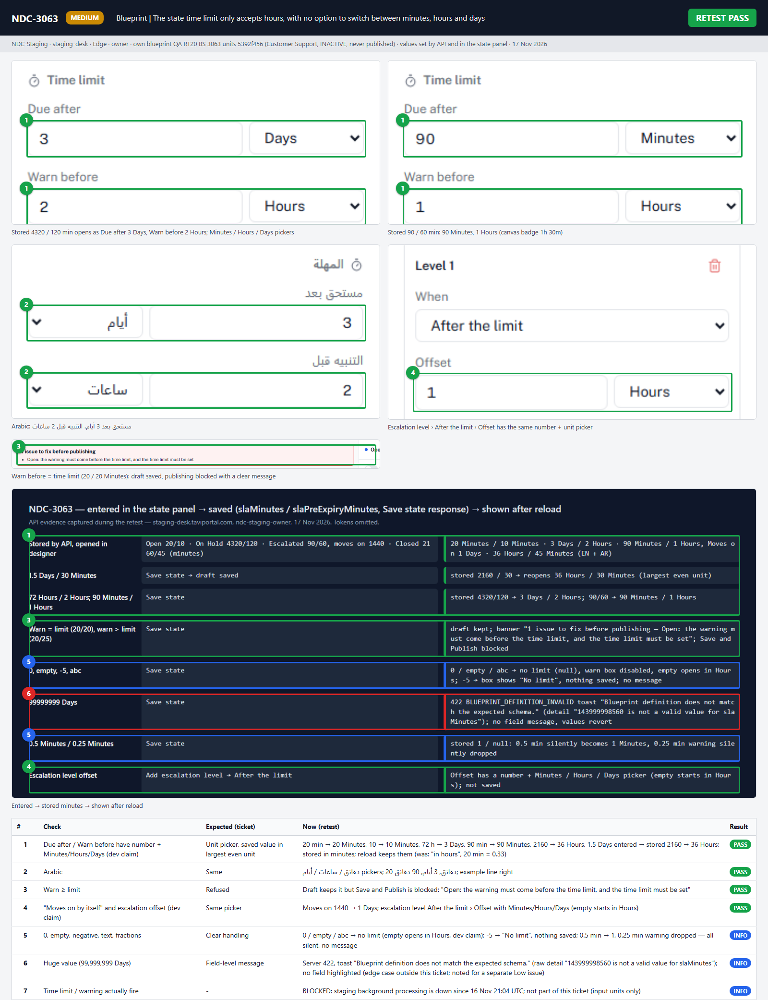

Retest round 20b — each ticket explained
6 tickets moved to Ready For Test on 17 Nov (08:19–10:54 UTC) · Mahmoud Mohamed · NDC-Staging (staging-desk / staging-crm) · Edge + API · retested 11:40–12:40 UTC · nothing posted to Plane yet
1PASS (3063)
3PARTIAL (2997, 3057, 3056)
2need your decision (3058, 2841)
0blocked
Staging health at the start (11:38 UTC): ticket numbers work again and the service the developer restarted (owner changes written after the save) works; ticket history is still not recorded. No check in this report depends on history.
Summary
| Ticket | Priority | Result | In one line | Recommendation |
|---|---|---|---|---|
| NDC-2997 | High | PARTIAL | Workflow Rules | Owner Assignment by role (round robin) never assigns anyone | Move to Bug with the re-fire problem as the still-failing item (or Done + file the re-fire as a new Medium bug, if you prefer to treat it as a new issue). |
| NDC-3058 | Medium | DECISION | Workflow Rules | Add Tags action says "Search or create a tag" but a new tag cannot be created from it | Decide: (a) accept that rules don't create tags → Done, and file the other-department tag list as a new Medium bug; or (b) Bug — a rule should be able to create a tag, as in Zoho Desk. |
| NDC-3057 | Low | PARTIAL | Workflow Rules | Condition summary shows "pending_approval" instead of "Pending approval" | Move to Bug — the fix covers one field; the ticket's problem remains for the other list fields. |
| NDC-3056 | Medium | PARTIAL | Blueprint | Agents cannot see the blueprint's flow and transition conditions from a ticket | Move to Bug — the "whole flow" part of the ticket is still not met. |
| NDC-3063 | Medium | PASS | Blueprint | The state time limit only accepts hours | Move to Done. |
| NDC-2841 | Medium | DECISION | SLA | A contract in one department can use a support plan from another department | Decide: (a) Done, and file the department-only change as a new Low bug; or (b) keep it in Bug for that path. |
NDC-2997 PARTIAL Workflow Rules | Owner Assignment by role (round robin) never assigns anyone · High
The problemA workflow rule with the action "Owner Assignment → by role / org unit, round robin" never gave the ticket an owner. Yesterday (16 Nov) it still failed: 9 tickets in 2 departments stayed without owner.
What the developer saidFixed in workflow #142 (deployed 17 Nov). 4 cases checked by the developer: CEO org unit on a Customer Support ticket → assigned to Customer Experience Specialists 2 (via the background worker, ~5 s); CEO on QA AO Dept A → Skipped "nobody in the org unit can own a ticket of this department"; profile round robin in an empty department → Skipped; profile round robin in QA AO Dept A → Dev Team 2. Notes: a ticket created by a person keeps its creator as owner; sub-roles do not count.
What I didHealth check first (ticket numbers back, history still down). Then my own inactive-after rules running On Edit (priority Low → High) for each of the developer's 4 cases, 3 tickets each, plus a Manager role pool of 2 agents over 6 tickets to check that turns alternate, plus an On Create rule to test the "creator keeps the ticket" note. 22 test tickets.
What works nowThe fix works: all 4 developer cases held (CES2 got 3 of 3 Customer Support tickets; Mahmoud Mohamed, read-only there, was never picked; the two Skipped cases give the right reason; Dev Team 2 got 3 of 3 in QA AO Dept A) and turns alternate Dev Team 2 / Test User 1 over 6 picks. The "creator keeps it" note did not hold — an On Create rule did set Dev Team 2, which is better. Yesterday's FAIL was partly our own reading: org units were read without the Desk app key, which returned the CRM org units.
What is still openNew problem caused by the fix: when the owner is set by the background worker, that owner change counts as an edit, so the same On Edit rule fires again and reassigns the ticket (run 2 is chained to run 1). The ticket's owner flips twice and final owners are uneven (Dev Team 2, Dev Team 2, Test User 1, Test User 1). The run says "assigned Test User 1" but the ticket ends with Dev Team 2.
Recommendation: Move to Bug with the re-fire problem as the still-failing item (or Done + file the re-fire as a new Medium bug, if you prefer to treat it as a new issue).
All checks (as in the evidence image)
| # | Check | Expected | Now | Result |
|---|---|---|---|---|
| 1 | Roles › CEO round robin, Customer Support tickets | Owner from the role who can own the ticket | 3/3 → Customer Experience Specialists 2, Succeeded; Mahmoud Mohamed (read-only there) never picked (dev claim held) | PASS |
| 2 | Nobody in the role/profile can own the ticket | Owner kept, action Skipped with reason | CEO in QA AO Dept A: Skipped "nobody in the org unit can own…"; Profile in empty dept: Skipped "nobody in the role can own…" (dev claims held) | PASS |
| 3 | Profiles › Desk Administrator in QA AO Dept A; Roles › Manager turn-taking | Owner set; members take turns | Profile 3/3 → Dev Team 2; Manager dispatches alternate Dev Team 2 / Test User 1 (6 picks) | PASS |
| 4 | Same rule, ticket goes to background worker | One owner per edit, tickets alternate | Owner write fires the On Edit rule again; 2nd run reassigns → final owners DT2, DT2, TU1, TU1 (and DT2, TU1, TU1, TU1); run 1 body says Test User 1, ticket ends with Dev Team 2 | FAIL |
| 5 | Dev note: person-made ticket keeps creator on an On Create rule | Creator kept | Not held: On Create rule set Dev Team 2 (better than the note) | INFO |
| 6 | Ticket History shows the owner change | Owner change logged | BLOCKED: history writer down (no events for any edit, incl. a manual priority change) | INFO |
Annotated evidence

NDC-3058 DECISION Workflow Rules | Add Tags action says "Search or create a tag" but a new tag cannot be created from it · Medium
The problemThe Add Tags action's box said "Search or create a tag", but typing a new name created nothing.
What the developer saidProduct decision 17 Nov: a Desk rule does not create tags, because Desk tags belong to a department and a rule can span several departments; tags are created on Tickets → Tags. Wording changed to "Search tags…", a new name shows "No matching tags". The developer notes this differs from Zoho.
What I didOpened Add Tags and Remove Tags in a new rule, typed an existing and a non-existent name, pressed Enter, watched the network; then saved a rule with an existing tag (limited to QA AO Dept A) and fired it by editing a ticket.
What works nowWording fix holds in both actions: "Search tags…", a new name shows "No matching tags", Enter adds nothing and no create request is sent. Picking an existing tag works and the rule tagged ticket #4885.
What is still openThe tag list shows every department's tags with no department name ("QA WF tag A" appears 3 times). The first one belonged to Customer Support and was put on a QA AO Dept A ticket — this contradicts the developers' own reason that tags belong to a department. Execution History also shows no Add Tags action row. Zoho was not checked live today.
Recommendation: Decide: (a) accept that rules don't create tags → Done, and file the other-department tag list as a new Medium bug; or (b) Bug — a rule should be able to create a tag, as in Zoho Desk.
All checks (as in the evidence image)
| # | Check | Expected | Now | Result |
|---|---|---|---|---|
| 1 | Add Tags + Remove Tags box wording, type a new name | Box says "Search tags…"; new name → "No matching tags" (dev) | Both boxes "Search tags…"; "No matching tags"; Enter adds nothing; no create request (dev claim held) | PASS |
| 2 | Pick an existing tag, save, rule runs on edit | Tag added to the ticket | Rule saved, Fired on edit of #4885; tags QA WF tag B + QA WF tag A on the ticket | PASS |
| 3 | Tag list in a rule limited to QA AO Dept A | Only the department's tags (dev: tags belong to a department) | All departments' tags offered, same names 3x, no department label; the first "QA WF tag A" was Customer Support's and was put on a QA AO Dept A ticket; Execution History shows no Add Tags action row | FAIL |
| 4 | Create a new tag from the rule, like Zoho | Ticket expected: Create "test" | Not built by decision (dev 17 Nov). Lead decides: (a) accept wording fix → Done; (b) Bug: rule should create tags like Zoho. Zoho not checked live this round | DECISION |
Annotated evidence

NDC-3057 PARTIAL Workflow Rules | Condition summary shows "pending_approval" instead of "Pending approval" · Low
The problemThe folded condition line of a rule showed the stored value ("pending_approval") instead of the label users see.
What the developer saidFixed (client-engine #839): list fields now show their option label, without quotes on named values. Not checked by the developer: Status, Priority, a custom list, a related record's list field, the CRM rule editor, Arabic.
What I didBuilt rules with conditions on every kind of list field in Desk (Approval Status, Status, Priority, Language, Classification, Happiness Rating, Ticket Approval Status, a custom list, a related Contact's Type) and in the CRM rule editor (Lead Source, Rating, Industry), in English and Arabic; read the folded line and the open editor.
What works nowApproval Status is fixed in Desk, CRM and Arabic ("Pending approval", no quotes); typed text keeps its quotes. Status and the custom list look right only because their stored value equals the label.
What is still openStill stored values: Desk Priority [high, urgent] (ticket page says "High"), Language arabic, Classification [feature], Happiness Rating okay, Ticket Approval Status pending, Contact · Type customer; CRM Lead Source [web, referral], Rating market_failed, Industry technology. In Arabic all stay as English stored values. The open condition editor also shows the stored values; the Arabic pattern "( 1 and 2 )" is not translated.
Recommendation: Move to Bug — the fix covers one field; the ticket's problem remains for the other list fields.
All checks (as in the evidence image)
| # | Check | Expected | Now | Result |
|---|---|---|---|---|
| 1 | Approval Status is Pending approval, folded line | Approval Status = Pending approval, no quotes | Approval Status = Pending approval (dev claim held); typed text keeps quotes (Subject starts with "QA RT20 WF 3057 ") | PASS |
| 2 | Status and a custom list (QA NDC Transaction Type) | Option label | Status is one of [On Hold]; QA NDC Transaction Type = Time Limit/BDF — stored value equals the label here | PASS |
| 3 | Priority, Language, Classification, Happiness Rating, Ticket Approval Status | Label agents see (ticket shows Priority High) | Priority is one of [high, urgent]; Language = arabic; Classification is one of [feature]; Happiness Rating = okay; Ticket Approval Status = pending (the open editor also shows lowercase values) | FAIL |
| 4 | A related record's list field | Label (Customer) | Contact · Type = customer | FAIL |
| 5 | CRM rule editor (Leads) | Labels | Approval Status = Pending approval; Lead Source is one of [web, referral]; Rating = market_failed; Industry = technology | FAIL |
| 6 | Arabic layout | Translated labels | Approval Status in Arabic; other values English stored values; editor pattern "( 1 and 2 )" not translated | FAIL |
Annotated evidence

NDC-3056 PARTIAL Blueprint | Agents cannot see the blueprint's flow and transition conditions from a ticket · Medium
The problemAn agent on a ticket could not see the blueprint's flow (states and transitions) or the conditions of each transition. Yesterday PARTIAL: the popup showed only the steps leaving the current state.
What the developer saidDeployed client-engine #847: the header shows the step's button with "View configured actions" beside it; the link opens the blueprint's flow and stays when nothing can run; English + Arabic checked.
What I didSigned in once as the QA agent Customer Experience Specialists 2; my own blueprint with 4 states and 6 transitions; opened the ticket in each state (Open, Escalated, Closed), ran steps as the agent, checked the popup, conditions and run status, English and Arabic; read what the server sends to the agent.
What works nowHeader link is there next to the step button and stays when nothing can run; Steps card keeps its link; "Shown when: Priority = high/medium", "You can run this step", "Asks for: Checklist" and "You can't run this step now…" are shown; the agent ran two steps and the ticket moved.
What is still openSame as yesterday: the popup draws only the transitions leaving the current state — 3 of 6 in Open, 1 of 6 in Escalated, 1 of 6 in Closed; On Hold → Closed never appears. The server already sends the agent the whole flow (all 4 states, all 6 transitions), so only the drawing is missing.
Recommendation: Move to Bug — the "whole flow" part of the ticket is still not met.
All checks (as in the evidence image)
| # | Check | Expected | Now | Result |
|---|---|---|---|---|
| 1 | Header while a step can run (dev claim) | Step button + "View configured actions" | "QA go" + link side by side; same in Arabic ("عرض الإجراءات المُعدّة") with "QA reopen"; Steps card keeps its link | PASS |
| 2 | Header while nothing can run (dev claim) | Link stays | Escalated, priority low: "No transitions you can run · View configured actions" | PASS |
| 3 | Popup = the blueprint's flow (all states and transitions) | Every state and transition, like CRM | Still only the steps leaving the current state: Open 3 of 6, Escalated 1 of 6, Closed 1 of 6; On Hold → Closed never shown; the server already sends all 6 | FAIL |
| 4 | "Shown when" conditions | Shown on each conditional transition | Priority = "high" (Open → On Hold) and Priority = "medium" (Escalated → Closed) shown — but only when that state is current | PASS |
| 5 | What the agent can / can't run | Clear per step | "You can run this step" / "Nothing to fill in" / "Asks for: Checklist"; conditional and owner-only steps: "You can't run this step now…" (does not say which reason); agent ran go and end → moved | PASS |
| 6 | Server data | Full flow available to agents | blueprint-state as agent 200 with allStates 4 + allTransitions 6 incl. criteria | INFO |
Annotated evidence

NDC-3063 PASS Blueprint | The state time limit only accepts hours · Medium
The problemA state's time limit and warning could only be entered in hours ("Time limit in hours"); a 20-minute limit showed as 0.33.
What the developer saidDeployed client-engine #847: "Due after" and "Warn before" each have a number and a Minutes / Hours / Days picker; a saved value opens in the largest unit it fills evenly; an empty box starts in hours.
What I didMy own inactive blueprint; saved 20/10 minutes, 72 hours, 90 minutes, 1.5 days, 3 days; reloaded; read the stored minutes through the API; tried invalid values (0, empty, text, negative, fractions, huge), warning after the limit; English and Arabic; checked "Moves on by itself" and escalation offsets too.
What works nowAll as the ticket expects: 20/10 → "20 Minutes / 10 Minutes", 4320 → 3 Days, 90 → 90 Minutes, 1.5 Days stored as 2160 and reopened as 36 Hours, 72 Hours reopens as 3 Days, empty starts in Hours; same picker for "Moves on by itself" and escalation offset; Arabic the same; warning not before the limit blocks publishing with a clear message.
What is still openNothing for this ticket. Small notes: 0 / empty / text become "no limit", −5 shows "No limit", 0.5 min becomes 1, a 0.25-min warning is dropped — all silently; a huge value (99,999,999 days) gives a schema error toast. Whether the limit actually fires could not be checked (background processing down) — outside this ticket.
Recommendation: Move to Done.
All checks (as in the evidence image)
| # | Check | Expected | Now | Result |
|---|---|---|---|---|
| 1 | Due after / Warn before have number + Minutes/Hours/Days (dev claim) | Unit picker, saved value in largest even unit | 20 min → 20 Minutes, 10 → 10 Minutes, 72 h → 3 Days, 90 min → 90 Minutes, 2160 → 36 Hours, 1.5 Days entered → stored 2160 → 36 Hours; stored in minutes; reload keeps them (was: "in hours", 20 min = 0.33) | PASS |
| 2 | Arabic | Same | دقائق / ساعات / أيام pickers; 20 دقائق, 3 أيام, 90 دقائق; example line right | PASS |
| 3 | Warn ≥ limit | Refused | Draft keeps it but Save and Publish is blocked: "Open: the warning must come before the time limit, and the time limit must be set" | PASS |
| 4 | "Moves on by itself" and escalation offset (dev claim) | Same picker | Moves on 1440 → 1 Days; escalation level After the limit › Offset with Minutes/Hours/Days (empty starts in Hours) | PASS |
| 5 | 0, empty, negative, text, fractions | Clear handling | 0 / empty / abc → no limit (empty opens in Hours, dev claim); -5 → "No limit", nothing saved; 0.5 min → 1, 0.25 min warning dropped — all silent, no message | INFO |
| 6 | Huge value (99,999,999 Days) | Field-level message | Server 422, toast "Blueprint definition does not match the expected schema." (raw detail "143999998560 is not a valid value for slaMinutes"); no field highlighted | FAIL |
| 7 | Time limit / warning actually fire | - | BLOCKED: staging background processing is down since 16 Nov 21:04 UTC; not part of this ticket (input units only) | INFO |
Annotated evidence

NDC-2841 DECISION SLA | A contract in one department can use a support plan from another department · Medium
The problemA contract in Department A could be saved with Department B's support plan. Yesterday PARTIAL: create with a Dept B plan was accepted (201) and the New Contract form listed every department's plans.
What the developer saidDeployed 17 Nov (metadata-engine + Desk app): create and change with another department's plan → 422 SUPPORT_PLAN_OTHER_DEPARTMENT; the form's plan field was not checked in a browser by the developer.
What I didAPI: create (3 times), change plan, attach plan, move department with and without a matching plan, contract without department. Browser: New Contract form plan list per department, changing department after picking a plan, saving the mismatch, English and Arabic.
What works nowBoth of yesterday's failures are fixed. API: 422 with a clear message, nothing created; change → 422; attach → 409; moving department together with a matching plan → 200; no department → "Department is required." Form: lists only the chosen department's plans; after a department change shows "This plan belongs to another department. Choose a plan of QA RT19 SLA Dept B." (Arabic too); saving the mismatch is refused; the right plan saves (201).
What is still openOne path not covered (the developer said so): changing only the department of a contract that already has a plan returns 200 — the contract moves to Dept B, keeps the Dept A plan in its field and silently has no plan coverage. Minor: help text repeats "the contract's department"; the server error stays under Support Plan after the right plan is picked; the wrong plan stays ticked in the list.
Recommendation: Decide: (a) Done, and file the department-only change as a new Low bug; or (b) keep it in Bug for that path.
All checks (as in the evidence image)
| # | Check | Expected | Now | Result |
|---|---|---|---|---|
| 1 | New Contract form: plan list | Only the contract department's plans | Dept A → 3 Dept A plans; Dept B → Dept B plans; Sales → "the contract's department has no active support plans"; same in Arabic (dev did not check the browser) | PASS |
| 2 | Department changed after a plan was picked | Error / clear | Red "This plan belongs to another department. Choose a plan of QA RT19 SLA Dept B." (AR same); Save sends the form and the server refuses (422), nothing created; with the Dept B plan the form saved (201, contract 562e9bee) | PASS |
| 3 | Create a Dept A contract with a Dept B plan (r19 failing item) | Refused | 422 SUPPORT_PLAN_OTHER_DEPARTMENT ×3 with a clear message; no contract created (was 201 + silent "No support plan") | PASS |
| 4 | Change / attach a Dept B plan on a Dept A contract | Refused | Record PATCH 422, panel attach 409; plan stays A; control with own plan 201 | PASS |
| 5 | Contract without department; move to Dept B with a Dept B plan | - | No department now 422 "Department is required."; moving with a matching plan 200 | PASS |
| 6 | Change only the department of a contract that has a plan | Refused (ticket rule: only own department's plan) | 200: contract is Dept B but keeps the Dept A plan in its field, coverage silently "no_plan" (dev: not covered). Options: (a) Done + new Low bug for this path; (b) keep in Bug | FAIL |
Annotated evidence

New findings from these tickets — not filed
| Sev | Finding | From |
|---|---|---|
| Medium | Owner Assignment re-fires its own On Edit rule after the background owner write and reassigns the ticket | NDC-2997 |
| Medium | Add Tags picker offers and applies other departments' tags; Execution History shows no Add Tags row | NDC-3058 |
| Low | Contract department-only change keeps the other department's plan and silently drops coverage | NDC-2841 |
| Low | Huge time limit gives "Blueprint definition does not match the expected schema"; fractions/negatives changed silently | NDC-3063 |
| Info | Workflow run detail shows raw ids and an empty Details column | NDC-2997 |
Data and sign-ins
- All test data prefixed "QA RT20 WF" / "QA RT20 BS", listed in ledger.md; all rules and blueprints left inactive; SLA policies inactive; nothing changed tenant-wide.
- One sign-in of the QA agent Customer Experience Specialists 2 (for NDC-3056); owner session shared, never re-signed.
- Other round-20 tickets: NDC-2275 retest against live Zoho Desk still running; NDC-3000 and NDC-3068 blocked by the staging outage (3000 has a BLOCKED comment).